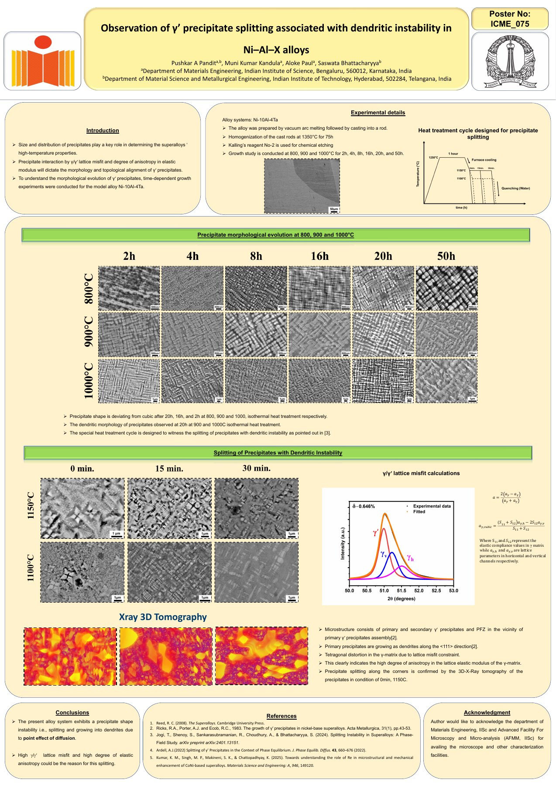

Research Area: Multicomponent Diffusion and Microstructural Evolution in High-Temperature Alloys
Presented by Mr. Pushkar A. Pandit.

Research Area: Multicomponent Diffusion and Microstructural Evolution in High-Temperature Alloys
My research focuses on understanding and predicting microstructural evolution in Ni-based superalloys through an integrated experimental and computational approach. I investigate the growth, coarsening, morphological instabilities, and splitting of γ′ precipitates in Ni–Al–X (X = Ta, Re) alloys, with particular emphasis on the effects of multicomponent diffusion, interfacial energy, lattice misfit, and elastic anisotropy. Experimental investigations involve diffusion-couple studies, high-temperature heat treatments, and quantitative microstructural characterization. I employ physics-informed neural networks (PINNs) to estimate composition-dependent multicomponent interdiffusion coefficients from experimental concentration profiles. Complementing these studies, I develop thermodynamically informed phase-field models based on the Kim–Kim–Suzuki (KKS) framework, incorporating coupled diffusion, CALPHAD thermodynamics, and coherency elasticity to simulate precipitate evolution. The broader objective is to establish quantitative relationships between alloy chemistry, diffusion kinetics, elastic interactions, and microstructural stability in high-temperature alloys.